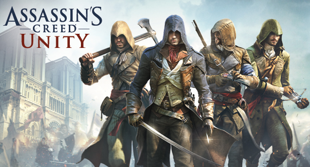

Assassin's Creed Unity
What is Unity?
Assassin's Creed Unity is a historical fiction action-adventure open world stealth video game developed by Ubisoft Montreal and published by Ubisoft. It was released in November 2014 for Microsoft Windows, PlayStation 4 and Xbox One. It is the eighth major installment in the Assassin's Creed series, and the successor to 2013's Assassin's Creed IV: Black Flag.
What's the story?
Set within Paris during the French Revolution, the single-player story follows Arno Dorian in his efforts to expose the true powers behind the Revolution. The game retains the series' third-person open world exploration as well as introducing a revamped combat, parkour and stealth system.
How is it different from other game in the series?
New weapons and customizing options ahve been added to the game, the crafting system has also seemed to have disappear. The game also introduces cooperative multiplayer to the Assassin's Creed series, letting up to four players engage in narrative-driven missions and explore the open-world map.